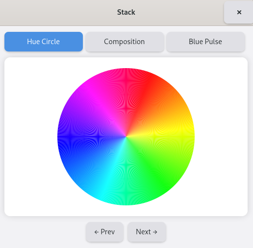
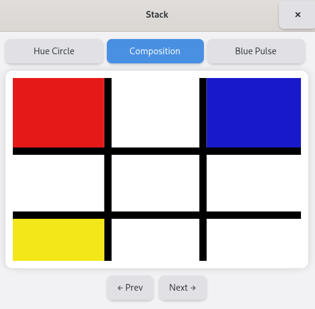
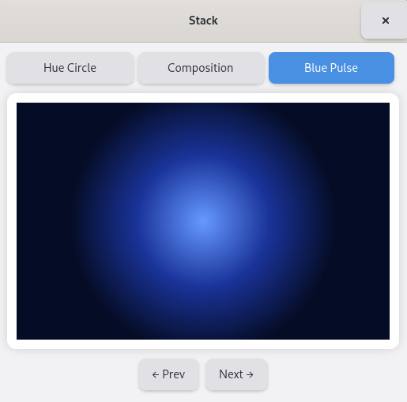

(update:2026/4/30)
Gtk::Stack は、 とは、複数の子ウィジェットを重ねて保持し、そのうち1つだけを表示するコンテナです。
Gtk::Stack は、
といった用途に用いることができます。
Gtk::Stack は複数の子ウィジェットを「ページ」として登録します。
| Glib::RefPtr<Gtk::StackPage> | Gtk::Stack::add | ( | Gtk::Widget& | child, | // 子ウィジット |
|---|---|---|---|---|---|
| const Glib::ustring& | name, | // 名前 | |||
| const Glib::ustring& | title | // タイトル | |||
| ) |
1 引数として指定されているスタックの子ウィジットを表示できるように切り替えます。
void Gtk::Stack::set_visible_child( Gtk::Widget& child )
2 引数として指定されている名前(name)の子ウィジットを表示できるように切り替えます。
void Gtk::Stack::set_visible_child( const Glib::ustring& name )
現在表示されているスタックの子ウィジットの名前を返します。
Glib::ustring Gtk::Stack::get_visible_child_name() const
Gtk::Stack がページを切り替えるときのアニメーション効果を指定するメソッドです。
void Gtk::Stack::set_transition_type( Gtk::StackTransitionType transition )
| Gtk::StackTransitionType | |
|---|---|
| 記 号 | 内 容 |
| NONE | アニメーション無し。瞬時に切り替わる。 |
| CROSSFADE | フェードしながら切り替わる。 |
| SLIDE_LEFT/SLIDE_RIGHT/SLIDE_UP/SLIDE_DOWN | ページがスライドして入れ替わる。 |
| OVER_UP/OVER_DOWN/OVER_LEFT/OVER_RIGHT | 新しいページが上からかぶさるように表示される。 |
| UNDER_UP/UNDER_DOWN/UNDER_LEFT/UNDER_RIGHT | 現在のページが下に潜り込むように切り替わる。 |
Gtk::Stack がページを切り替えるときの時間を指定します。
void Gtk::Stack::set_transition_duration( guint duration )
※ guint duration : ミリ秒
Gtk::Stack の特徴として、ページ切り替えのユーザーインターフェースを自動的に生成できる点があります。
ヘッダーバーなどに置くと、タブのような切り替えボタンを自動生成します。Gtk::Stack に接続すると、ページタイトルなどを自動的に読み取ってユーザーインターフェースを構築します。
左側にナビゲーションリストを作るユーザーインターフェースに適しています。
Gtk::Popover にメニューの内容を登録し、その後、Gtk::Popover を Gtk::MenuButton に結びつけます。
Gtk::Stack、Gtk::StackSwitcher を宣言します。
set_transition_type() を用いて、Gtk::Stackがページを切り替えるときのアニメーション効果を指定します。
ｻﾝﾌﾟﾙﾌﾟﾛｸﾞﾗﾑでは、スタックのページは、子ウィジットの要求に応じて左または右向きに切り替わります。
set_transition_duration() を用いて、Gtk::Stackがページを切り替えるときの時間をミリ秒単位で指定します。
Gtk::StackSwitcher::set_stack() を用いて、Gtk::Stack とGtk::StackSwitcher の連携を行います。
add() を用いて、Gtk::Stack にページを登録していきます。
set_visible_child() を用いて、引数として指定されているスタックの子ウィジットを表示します。
get_visible_child_name() を用いて現在表示されているページの名前を返します。
#include <gtkmm.h>
#include <cmath>
#include <vector>
#include <random>
//
// =============================
// クラス宣言（ヘッダ部）
// =============================
//
// HSV → RGB
void hsv_to_rgb(double h, double s, double v, double& r, double& g, double& b);
// Page1：色相環
class HueCircle : public Gtk::DrawingArea {
public:
HueCircle();
virtual ~HueCircle() = default;
private:
bool on_timeout();
void on_draw( const Cairo::RefPtr<Cairo::Context>& cr, int width, int height );
double angle_offset;
};
// Page2：Composition
class CompositionArea : public Gtk::DrawingArea {
public:
CompositionArea();
virtual ~CompositionArea() = default;
private:
void on_draw(const Cairo::RefPtr<Cairo::Context>& cr, int width, int height);
};
// Page3：グラデーション
class BluePulseArea : public Gtk::DrawingArea {
public:
BluePulseArea();
virtual ~BluePulseArea() = default;
private:
bool on_timeout();
void on_draw(const Cairo::RefPtr<Cairo::Context>& cr, int width, int height);
double phase;
};
// メインウィンドウ
class MyWindow : public Gtk::Window {
public:
MyWindow();
virtual ~MyWindow() = default;
private:
template<typename T>
void add_page( const Glib::ustring& name, const Glib::ustring& title );
void go_next();
void go_prev();
int get_current_index();
// 1.child widget の宣言
Gtk::Stack* stack;
Gtk::StackSwitcher* switcher;
Gtk::Box vbox;
Gtk::Button prev_btn;
Gtk::Button next_btn;
std::vector<Glib::ustring> page_ids;
};
//
// =============================
// メソッド定義（実装部）
// =============================
//
// HSV → RGB
void hsv_to_rgb(double h, double s, double v, double& r, double& g, double& b)
{
double c = v * s;
double x = c * ( 1 - std::fabs( std::fmod(h / 60.0, 2 ) - 1 ));
double m = v - c;
double rp, gp, bp;
if (h < 60) { rp = c; gp = x; bp = 0; }
else if (h < 120){ rp = x; gp = c; bp = 0; }
else if (h < 180){ rp = 0; gp = c; bp = x; }
else if (h < 240){ rp = 0; gp = x; bp = c; }
else if (h < 300){ rp = x; gp = 0; bp = c; }
else { rp = c; gp = 0; bp = x; }
r = rp + m;
g = gp + m;
b = bp + m;
}
//
// -----------------------------
// HueCircle
// -----------------------------
HueCircle::HueCircle()
: angle_offset(0.0)
{
set_content_width( 300 );
set_content_height( 300 );
set_draw_func( sigc::mem_fun( *this, &HueCircle::on_draw ));
Glib::signal_timeout().connect(
sigc::mem_fun( *this, &HueCircle::on_timeout ), 16 );
}
bool HueCircle::on_timeout() {
angle_offset += 0.5;
if ( angle_offset >= 360.0 ) angle_offset -= 360.0;
queue_draw();
return true;
}
void HueCircle::on_draw(const Cairo::RefPtr<Cairo::Context>& cr, int width, int height)
{
double cx = width / 2.0;
double cy = height / 2.0;
double radius = std::min(width, height) / 2.0 - 10;
for (int angle = 0; angle < 360; angle++) {
double r, g, b;
hsv_to_rgb( std::fmod( angle + angle_offset, 360.0 ), 1.0, 1.0, r, g, b );
cr->set_source_rgb( r, g, b );
cr->move_to( cx, cy );
cr->arc(cx, cy, radius, angle * M_PI / 180.0,
( angle + 1 ) * M_PI / 180.0);
cr->close_path();
cr->fill();
}
}
//
// -----------------------------
// CompositionArea
// -----------------------------
CompositionArea::CompositionArea() {
set_content_width( 300 );
set_content_height( 300 );
set_draw_func( sigc::mem_fun( *this, &CompositionArea::on_draw ));
}
void CompositionArea::on_draw(const Cairo::RefPtr<Cairo::Context>& cr, int width, int height)
{
cr->set_source_rgb( 1, 1, 1 );
cr->paint();
double line_w = 12.0;
cr->set_line_width( line_w );
cr->set_source_rgb( 0, 0, 0 );
double w = width;
double h = height;
// 固定レイアウトの縦線
cr->move_to( w * 0.33, 0 );
cr->line_to( w * 0.33, h );
cr->stroke();
cr->move_to( w * 0.66, 0 );
cr->line_to( w * 0.66, h );
cr->stroke();
// 固定レイアウトの横線
cr->move_to( 0, h * 0.4 );
cr->line_to( w, h * 0.4 );
cr->stroke();
cr->move_to( 0, h * 0.75 );
cr->line_to( w, h * 0.75 );
cr->stroke();
// 赤
cr->set_source_rgb( 0.9, 0.1, 0.1 );
cr->rectangle( 0, 0, w * 0.33 - line_w/2, h * 0.4 - line_w/2 );
cr->fill();
// 青
cr->set_source_rgb( 0.1, 0.1, 0.8 );
cr->rectangle( w * 0.66 + line_w/2, 0, w - w * 0.66, h * 0.4 - line_w/2 );
cr->fill();
// 黄
cr->set_source_rgb( 0.95, 0.9, 0.1 );
cr->rectangle( 0, h * 0.75 + line_w/2, w * 0.33 - line_w/2, h - h * 0.75 );
cr->fill();
}
//
// -----------------------------
// BluePulseArea
// -----------------------------
BluePulseArea::BluePulseArea()
: phase( 0.0 )
{
set_content_width( 300 );
set_content_height( 300 );
set_draw_func(sigc::mem_fun( *this, &BluePulseArea::on_draw ));
Glib::signal_timeout().connect(
sigc::mem_fun( *this, &BluePulseArea::on_timeout ), 16 );
}
bool BluePulseArea::on_timeout() {
phase += 0.03;
if ( phase > 2 * M_PI )
phase -= 2 * M_PI;
queue_draw();
return true;
}
void BluePulseArea::on_draw(const Cairo::RefPtr<Cairo::Context>& cr, int width, int height)
{
double cx = width / 2.0;
double cy = height / 2.0;
double radius = std::min( width, height ) / 2.0;
double pulse = 1.0 + 0.2 * std::sin( phase );
auto grad = Cairo::RadialGradient::create(
cx, cy, 0,
cx, cy, radius * pulse
);
grad->add_color_stop_rgb( 0.0, 0.4, 0.6, 1.0 );
grad->add_color_stop_rgb( 0.5, 0.1, 0.2, 0.6 );
grad->add_color_stop_rgb( 1.0, 0.02, 0.05, 0.15 );
cr->set_source( grad );
cr->rectangle( 0, 0, width, height );
cr->fill();
}
//
// -----------------------------
// MainWindow
// -----------------------------
MyWindow::MyWindow() {
set_title( "Stack" );
set_default_size( 520, 510 );
// 外部 CSS
auto css = Gtk::CssProvider::create();
css->load_from_path( "style.css" );
Gtk::StyleContext::add_provider_for_display(
Gdk::Display::get_default(),
css,
GTK_STYLE_PROVIDER_PRIORITY_USER
);
stack = Gtk::make_managed<Gtk::Stack>();
// 2.アニメーションの設定
stack->set_transition_type( Gtk::StackTransitionType::SLIDE_LEFT_RIGHT );
// 3.アニメーションを表示する時間の設定
stack->set_transition_duration( 300 );
add_page<HueCircle>( "hue", "Hue Circle" );
add_page<CompositionArea>( "comp", "Composition" );
add_page<BluePulseArea>( "pulse", "Blue Pulse" );
switcher = Gtk::make_managed<Gtk::StackSwitcher>();
// 4.Gtk::Stack とGtk::StackSwitcher の連携
switcher->set_stack( *stack );
prev_btn.set_label( "← Prev" ) ;
next_btn.set_label( "Next →" );
prev_btn.signal_clicked().connect([this] { go_prev(); });
next_btn.signal_clicked().connect([this] { go_next(); });
auto btn_box = Gtk::make_managed<Gtk::Box>( Gtk::Orientation::HORIZONTAL );
btn_box->set_spacing( 10 );
btn_box->set_halign( Gtk::Align::CENTER );
btn_box->append( prev_btn );
btn_box->append( next_btn );
vbox.set_orientation( Gtk::Orientation::VERTICAL );
vbox.set_spacing( 12 );
vbox.set_margin( 12 );
vbox.append( *switcher );
vbox.append( *stack );
vbox.append( *btn_box );
set_child( vbox );
}
template<typename T>
void MyWindow::add_page( const Glib::ustring& name, const Glib::ustring& title ) {
auto area = Gtk::make_managed<T>();
// 5.ページの登録
stack->add( *area, name, title );
page_ids.push_back( name );
}
void MyWindow::go_next() {
int idx = get_current_index();
idx = ( idx + 1 ) % page_ids.size();
// 6.ページの切替（表示）
stack->set_visible_child( page_ids[idx] );
}
void MyWindow::go_prev() {
int idx = get_current_index();
idx = ( idx - 1 + page_ids.size() ) % page_ids.size();
// 6.ページの切替（表示）
stack->set_visible_child( page_ids[idx] );
}
int MyWindow::get_current_index() {
// 7.現在表示されているページの取得
Glib::ustring current = stack->get_visible_child_name();
for ( size_t i = 0; i < page_ids.size(); i++ ) {
if ( page_ids[i] == current ) return i;
}
return 0;
}
//
// -----------------------------
// main
// -----------------------------
int main( int argc, char* argv[] )
{
auto app = Gtk::Application::create( "stack.example" );
return app->make_window_and_run<MyWindow>( argc, argv );
}
window {
background: #f2f2f5;
}
stack {
background: white;
border-radius: 12px;
padding: 12px;
box-shadow: 0 0 12px rgba( 0,0,0,0.15 );
}
stackswitcher button {
padding: 8px 16px;
border-radius: 8px;
background: #e0e0e5;
border: none;
margin-right: 6px;
}
stackswitcher button:hover {
background: #d0d0d5;
}
stackswitcher button:checked {
background: #4a90e2;
color: white;
}
button {
padding: 8px 16px;
border-radius: 8px;
background: #e0e0e5;
border: none;
box-shadow: 0 2px 4px rgba( 0,0,0,0.2 );
}
button:hover {
background: #d0d0d5;
}
button:active {
background: #c0c0c5;
}
| Gtk::Stack | ||
|---|---|---|
| Hue Circlue | Composition | Blue Pulse |
 |
 |
 |
| Previous | Top | Next |
| Copyright (c) Henrry Yamm Project All Rights Reserved. |
|---|